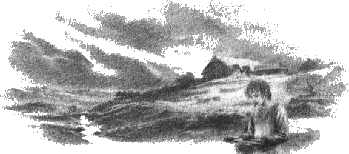
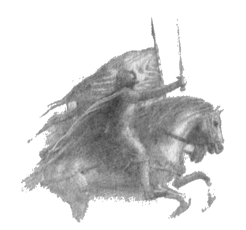

1
Hador Altınbaş bir Edain beyiydi ve Eldar tarafından çok sevilirdi. Ömrünün sonuna dek, ona Hithlum’un Dor-lómin denen bölgesinde geniş topraklar veren Fingolfin’in beyliği altında yaşadı. Kızı Glóredhel, Brethil insanlarının beyi olan Haltnir oğlu Haldir ile evlendi; ve aynı düğünde, oğlu Uzun Galdor, Halmir’in kızı Hareth ile evlendi.
Galdor ile Hareth’in iki oğlu oldu: Húrin ile Huor. Húrin üç yaş büyüktü, ama boyca akrabaları arasındaki diğer erkeklerden daha kısaydı; bu konuda annesinin halkına çekmişti, ama başka her konuda dedesi Hador’a benziyordu, vücudu güçlü, mizacı ateşliydi. Ama onun içindeki ateş istikrarlı yanıyordu ve iradesi son derece sağlamdı. Kuzey insanları arasında Noldor öğütlerini en iyi bilen oydu. Erkek kardeşi Huor uzun boyluydu; kendi oğlu Tuor dışında Edain içindeki en uzun boylu kişiydi ve hızlı koşardı; ama yarış uzun ve zorluysa eve ilk varan Húrin olurdu, çünkü o, yarışın sonunda da başındaki kadar hızlı koşardı. İki kardeş birbirini çok severdi ve gençliklerinde birbirlerinden nadiren ayrıldılar.
Húrin, Bëor Evi’nden Bregolas’ın oğlu Baragund’un kızı Morwen ile evlendi; yani Morwen, Tek-Elli Beren’in yakın akrabasıydı. Morwen siyah saçlı ve uzun boyluydu ve bakışlarındaki ışıltı, yüzündeki güzellik yüzünden insanlar ona Eledhwen, Elf-ışıltısı lakabını vermişti; ama mizacı sert ve gururluydu. Bëor Evi’nin hüzünleri Morwen’in yüreğini kederlendirmişti ; çünkü o, Bragollach’ın yıkılmasının ardından Dorthonion’dan Dor-lómin’e sürgün olarak gelmişti.
Húrin ile Morwen’in en büyük çocuklarının adı Túrin’di ve Beren’in Doriath’a geldiği, Thingol kızı Tinúviel’i bulduğu sene doğmuştu. Morwen Húrin’e bir de kız evlat verdi ve ona Urwen adını verdiler; ama kısa ömründe tanıyan herkes ona Lalaith, yani Kahkaha diyordu.
Huor, Morwen’in kuzeni Rían ile evlendi; Rían, Bregolas oğlu Belegund’un kızıydı. Kör talih eseri bu günlerde doğmuştu, çünkü iyi yürekliydi ve ne av ne de savaştan hoşlanırdı. Sevgisini doğadaki ağaçlara ve çiçeklere verirdi; şarkı söyler, şarkı bestelerdi. Huor ile evlenmesinin üzerinden yalnızca iki ay geçmişti ki, Huor kardeşi ile birlikte Nirnaeth Arnoediad’a gitti ve Rían onu bir daha görmedi.
Ama şimdi hikaye Húrin ile Huor’un gençliğine dönüyor. Galdor’un oğullarının, o günlerde Kuzey insanlarında âdet olduğu üzere, bir süre amcaları Haldir’in üvey evlatları olarak Brethil’de yaşadığı söylenir. O günlerde ülkelerinin kuzey sınırlarına saldırılar düzenleyen orklara karşı, Brethil insanları ile birlikte sık sık savaşmaya gitmişlerdir; çünkü yalnızca on yedi yaşında olan Húrin güçlüydü ve ondan küçük olan Huor, o halkın çoğu yetişkini kadar uzun boylu olmuştu.
Bir seferinde Húrin ile Huor bir keşif kolu ile birlikte çıkmışlardı, ama orkların pususuna düştüler ve dağıldılar, orklar iki kardeşi Brithiach Geçidi’ne kadar kovaladı. Ulmo’nun Sirion sularında hâlâ etkili olan gücü olmasa yakalanıp öldürülürlerdi; ırmaktan bir sisin yükseldiği ve onları düşmanlarından sakladığı, iki kardeşin Brithiach’ı aşıp Dimbar’a girdiği söylenir. Orada büyük güçlükler çekerek Crissaegrim’in dik duvarlarının dibindeki tepelerin arasında dolandılar ve sonunda arazinin aldatıcılığı yüzünden şaşkınlaşıp, nereye gideceklerini, nereye döneceklerini bilemez oldular. Thorondor onları orada gördü ve kartallarından ikisini onlara yardım etmeye gönderdi; ve kartallar iki kardeşi taşıyarak Kuşatan Dağların ötesine, saklı Tumladen Vadisi’ne, o ana dek hiçbir insanın görmediği gizli Gondolin şehrine götürdü.
Orada, soylarını öğrenince Kral Turgon onları iyi karşıladı; çünkü Hador elf dostuydu, üstelik Ulmo Turgon’a, ihtiyaç duyduğunda yardım alabileceği o Ev’in oğullarına müşfik davranmasını öğütlemişti. Húrin ile Huor bir seneye yakın bir süre Kral’ın evinde konuk oldular; ve bu süre içinde, zeki ve hevesli biri olan Húrin’in elflerden epey irfan öğrendiği, aynı zamanda Kral’ın öğütlerinden ve maksatlarından ders aldığı söylenir. Çünkü Turgon, Galdor’un oğullarını pek sevmişti ve onlarla bol bol sohbet ediyordu; elf olsun, insan olsun, gizli krallığın yolunu bulan ya da şehri gören hiçbir yabancının, Kral gizli şehirlerini açana ve saklı halk dışarı çıkana dek oradan bir daha ayrılamayacağı kanunu yüzünden değil, sırf onları sevdiğinden dolayı, onları Gondolin’de tutmayı diliyordu.
Ama Húrin ile Huor kendi halklarına dönmek, başlarına musallat olmuş savaşları ve acıları paylaşmak istiyorlardı. Húrin Turgon’a şöyle dedi: “Beyim, biz yalnızca ölümlü insanlarız, Eldar’a benzemeyiz. Onlar uzak bir günde düşmanlan ile savaşmayı beklemeye uzun süre tahammül edebilirler; ama bizim için zaman kısa, umudumuz ve gücümüz az zamanda solup gider. Dahası, Gondolin yolunu biz bulmadık, bu şehrin nerede durduğunu tam olarak bilmiyoruz, çünkü havadaki yüksek yollardan, korku ve hayret içinde getirildik ve merhamet eseri gözlerimize perde inmişti.” Bunun üzerine Turgon onun dileğini bahşetti ve şöyle dedi: “Thorondor izin verirse, geldiğiniz yoldan dönmek zorundasınız. Sizden ayrılmak beni üzecek; ama Eldar hesabıyla kısa süre sonra yine görüşebiliriz.”
Ama, Gondolin’de kudretli biri olan, Kral’ın kız kardeşinin oğlu Maeglin onların gidişine hiç üzülmemişti, Kral’ın onlara bahşettiği lütfü onlara fazla görüyordu, çünkü hiçbir insan soyuna sevgi duymuyordu; Húrin’e şöyle dedi: “Kral’ın lütfü bildiğinden daha büyük ve sıkı bir kanunun iki genç insan çocuğu için neden göz ardı edildiğini merak edenler çıkacaktır. Ömürlerinin sonuna dek burada, hizmetkarlarımız olarak yaşamaları dışında bir seçeneklerinin olmaması daha güvenli olurdu.”
“Kral’ın lütfü gerçekten de büyük,” diye yanıt verdi Húrin, “ama sözümüz yeterli değilse, size yemin ederiz.” Ve iki kardeş, Turgon’un öğütlerini asla açıklamayacaklarına, onun diyarında gördükleri her şeyi gizli tutacaklarına yemin ettiler. Sonra veda ettiler ve kartallar geceleyin gelip onları alarak şafaktan önce Dor-lómin’e bıraktı. Akrabaları onları gördüklerine çok sevindiler, çünkü Brethil’den gelen ulaklar onların kaybolduğunu bildirmişti; ama nerede olduklarını babalarına bile söyleyemezlerdi, yalnızca yabandayken, onları eve getiren kartallar tarafından kurtarıldıklarını açıklayabilirlerdi. Ama Galdor şöyle dedi: “Yani bir sene boyunca yabanda mı yaşadınız? Yoksa kartallar sizi dağdaki yuvalarında mı barındırdılar? Ama yemek ve giysi bulmuşsunuz, geriye genç prensler olarak dönmüşsünüz, ormanda kalmış kimsesizler gibi değil.”
“Bizim döndüğümüze memnun ol, baba,” dedi Húrin, “çünkü buna ancak bir sessizlik yemini karşılığında izin verildi. O yemin bizi hâlâ bağlıyor.” Bunun üzerine Galdor onları daha fazla sorgulamadı, ama o ve pek çok başkası gerçeği tahmin etmişti. Çünkü insanlar, sessizlik yemininin ve kartalların Turgon’a işaret ettiğini düşünüyordu.
Böylece günler geçti ve Morgoth’un düşürdüğü korku gölgesi uzadı. Ama Noldor’un Orta Dünya’ya dönüşünün dört yüz altmış dokuzuncu senesinde, elfler ve insanlar arasında bir umut doğdu; çünkü aralarında, Beren ile Luthien’in başarılarına ve Morgoth’un Angband’da, kendi tahtında mahcup edildiğine dair söylentiler dolaşıyordu, bazıları Beren ile Luthien’in hâlâ hayatta olduğunu, ya da ölümden döndüklerini söylüyordu. O sene, Maedhros’un büyük divanları da tamamlanmak üzereydi ve Morgoth’un ilerleyişi Eldar ile Edain’in canlanan gücü sayesinde durdurulmuştu ve orklar Beleriand’dan sürülmüştü. Sonra bazıları gelecek zaferlerden, Bragollach Savaşı’nın telafi edilmesinden, Maedhros’un birleşik ordulara ne zaman kumanda edip Morgoth’u yeraltına süreceğinden, ne zaman Angband Kapılarını mühürleyeceğinden bahsetmeye başladı.
Ama daha bilge olanlar hâlâ huzursuzdu, Maedhros’un artan gücünü çok erken açığa vurduğundan, Morgoth’un ona karşı önlem düşünecek zaman bulabileceğinden korkuyordu. “Angband’da, elflerin ve insanların tahminin ötesinde, yepyeni bir şer planlanacak,” dediler. Ve o senenin güzünde, kurşuni göklerin altında, Kuzey’den uğursuz bir rüzgar gelerek onların sözlerini haklı çıkardı. Habis Nefes adı verildi ona, çünkü hastalık getirmişti; ve o senenin güz mevsiminde, Anfauglith sınırındaki kuzey diyarlarında pek çok kişi hastalandı ve öldü, ölenlerin büyük kısmı insan evlerindeki çocuklar ya da gençlerdi.
O sene, Húrin oğlu Túrin daha beş yaşındaydı ve bahar başında kız kardeşi Urwen üç yaşına basmıştı. Urwen’in saçları, çimenliklerde aralarında koştuğu sarı zambaklar gibiydi ve kahkahası, babasının evinin duvarlarının ötesindeki tepelerden şarkı söyleyerek gelen neşeli derenin sesine benziyordu. Dereye Nen Lalaith deniyordu ve ev halkı o dereden esinle çocuğa Lalaith lakabını taktılar, o aralarında koşuştururken yürekleri sevinç doluyordu.
Ama Túrin onun kadar sevilmiyordu. Túrin annesi gibi siyah saçlıydı ve mizacı da ona benzeyecek gibiydi; çünkü Túrin neşeli değildi, konuşmayı erken öğrenmesine rağmen pek az konuşuyordu ve yaşından büyük gösteriyordu. Túrin haksızlıkları ve alayları kolay kolay unutmazdı; ama içinde, babasındaki ateşi de taşıyordu ve aniden öfkelenebiliyordu. Ama merhameti de tezdi, canlı varlıkların yaraları ve üzüntüleri onu gözyaşlarına boğabiliyordu; bu konuda da babasına çekmişti, çünkü Morwen başkalarına da kendine olduğu kadar haşindi. Túrin annesini çok seviyordu, çünkü annesi onunla açık sözlülükle ve sade bir şekilde konuşuyordu; ama babasını pek az görüyordu, çünkü Húrin, Fingon’un Hithlum’un doğu sınırlarını koruyan ordusu ile birlikte sık sık uzun sürelerle gurbete gidiyordu ve döndüğü zaman, yabancı sözcükler ve jestlerle, imalarla dolu hızlı konuşma tarzı Túrin’i şaşırtıyor, huzursuz ediyordu. O zamanlar yüreğindeki tüm sıcaklığı kız kardeşi Lalaith’e adamıştı; ama onunla nadiren oyun oynuyordu. Onun Edain çocuklarının elf dili henüz ağızlarında tazeyken yaptıkları şarkıları söyleyerek çimenlerde ya da ağaçların altında dolaşmasını izlemek, onu kendini göstermeden korumak daha çok hoşuna gidiyordu.
“Lalaith bir elf çocuğu kadar güzel,” dedi Húrin Morwen’e; “ama heyhat, ömrü daha kısa! Ve bu yüzden daha da güzel, daha da kıymetli geliyor belki.” Bu sözleri duyan Túrin düşünüp taşındı, ama anlayamadı. Çünkü hiç elf çocuğu görmemişti. O zamanlarda babasının topraklarında hiç Eldar yaşamıyordu ve onları yalnızca bir kez, Kral Fingon ve beylerinin büyük kısmı at sırtında Dor-lómin’den geçerken, ışıl ışıl gümüşler ve beyazlar içinde, Nen Lalaith Köprüsü’nü aşarken görmüştü.
Ama sene bitmeden babasının sözleri doğru çıktı; çünkü Habis Nefes Dor-lómin’e geldi ve Túrin hastalandı ve uzun süre ateşler içinde, karanlık düşler görerek yattı. İyileştiği zaman, çünkü yazgısı ve içindeki yaşam gücü böyleydi, Lalaith’i sordu. Ama dadısı şöyle yanıt verdi: “Artık Lalaith’ten bahsetme, Húrin’in oğlu; ama kız kardeşin Urwen’i annene sormalısın.”
Morwen yanına geldiğinde Túrin ona şöyle dedi: “Artık hasta değilim ve Urwen’i görmek istiyorum; ama neden artık Lalaith dememem gerekiyor?”
“Çünkü Urwen öldü ve bu evde kahkaha dindi,” diye yanıt verdi annesi. “Ama sen yaşıyorsun, Morwen’in oğlu; ve bunu bize yapan düşman da yaşıyor.”
Morwen, kendini avutmadığı gibi, oğlunu da avutmadı; çünkü kendisi ızdırabı sessizlik ve soğuk bir yürekle karşılaşmıştı. Ama Húrin açık açık yas tuttu, bir ağıt yakmak için arpını eline aldı; ama yapamadı, arpını kırdı ve dışarı çıkarken elini Kuzey’e doğru kaldırarak haykırdı: “Ey Orta Dünya’yı mahveden, umarım seninle yüz yüze gelir, beyim Fingolfin’in yaptığı gibi mahvederim!”
Túrin geceleyin yalnız kaldığında acı acı ağladı, ama Morwen’in yanında kız kardeşinin adını bir daha ağzına almadı. O günlerde tek bir dostuna döndü ve kederinden, evin boşluğundan yalnızca ona bahsetti. Bu dostun adı Sador’du, Húrin’in emrinde bir uşaktı; topaldı ve önemsiz biriydi. Eskiden oduncuydu ve talihsizlik eseri ya da baltasını beceriksizce kullanması sonucu, sağ ayağını kesmişti, ayaksız kalan bacak büzülmüştü; Túrin ona, “Seksekayak” anlamına gelen Labadal lakabıyla hitap ediyordu, ama bu lakap Sador’u üzmüyordu, çünkü horgörüyle değil, merhametle verilmiş bir lakaptı. Sador hizmet binalarında çalışıyor, evde ihtiyaç duyulan ufak tefek şeyleri yapıyor ya da onarıyordu, çünkü marangozlukta becerikliydi; ve Túrin, bacağını esirgemek için eksiklerini ona getiriyor, zaman zaman, kimse görmeden bulduğu bir aleti ya da tahta parçasını, arkadaşının işine yarayacağını düşünürse, gizliden gizliye ona götürüyordu. O zaman Sador ona gülümser, ama armağanlarını yerlerine götürmesini söylerdi; “Serbestçe ver, ama ancak sana ait olanı ver,” derdi. Çocuğun iyiliğini elinden geldiğince ödüllendiriyor, ona insan ya da hayvan figürleri oyuyordu; ama Túrin en çok Sador’un hikayelerinden zevk alıyordu, çünkü Sador’un gençliği Bragollach günlerine denk gelmişti ve şimdi, sakat kalmadan önceki, eksiksiz bir erkek olduğu kısa günleri anmaya bayılıyordu.
“O büyük bir savaştı, öyle diyorlar, Húrin’in oğlu. O sene, ihtiyaç doğduğundan, ormandaki görevlerimden çağrıldım; ama ben Bragollach’a katılmadım, yoksa yaramı daha şerefli bir biçimde almış olabilirdim. Çünkü biz çok geç geldik, Kral Fingolfin’i korurken ölen eski beyimiz Hador’un cenazesini geri getirmekten başka bir işe yaramadık. Bundan sonra asker oldum ve uzun seneler boyunca elf krallarının büyük kalesinde, Eithel Sirion’da yaşadım; ya da şimdi uzun senelermiş gibi geliyor, o zamandan bu yana geçen sıkıcı seneleri hatırlanır kılacak pek az şey oldu. Kara Kral saldırdığında Eithel Sirion’daydım ve Kral’ın yerine babanın babası Galdor kumandan olarak oradaydı. O saldırıda öldürüldü; erkekliğe yeni erişmiş olmasına rağmen beyliği ve kumandayı babanın aldığını gördüm. Onda elindeki kılıcı kızdıran bir ateş vardı, öyle eliyorlardı. Onun önderliğinde orkları kuma gömdük; ve o günden beri duvarlara yaklaşmaya cesaret edemiyorlar. Ama heyhat! Savaş aşkım dindi, çünkü yeterince kan ve yara gördüm; ve hasretini çektiğim ormanlara dönmek için izin aldım. İşte orada yaralandım; çünkü korkusundan kaçan bir adam, asıl onun kollarına koştuğunu keşfedebilir.”
Túrin büyürken Sador onunla bu şekilde konuştu; ve Túrin, Sador’un, onu eğitme işini daha yakın birinin yapması gerektiğini düşünerek yanıtlayamadığı pek çok soru sormaya başladı. Ve bir gün Túrin ona şöyle dedi: “Lalaith gerçekten de babamın söylediği gibi elf çocuğuna mı benziyordu? Hem ömrünün daha kısa olduğunu söyleyerek ne demek istedi?”
“Çok benziyordu,” dedi Sador; “çünkü çocukluklarında insan ve elf çocukları birbirlerine çok benzerler. Ama insan çocukları daha hızlı büyür ve çocuklukları çabuk geçer; bizim kaderimiz böyledir.”
Bunun üzerine Túrin sordu: “Kader nedir?”
“İnsanların kaderini,” dedi Sador, “Labadal’dan daha bilge olanlara sormalısın. Ama herkesin görebildiği gibi, biz daha çabuk yıpranıyoruz ve ölüyoruz; ve talihsizlik eseri pek çok kişi ölümle daha erken buluşuyor. Ama elfler yıpranmıyor ve çok kötü yaralanmadıkları sürece ölmüyorlar. İnsanları öldürebilecek yaralar ve ıstıraplar onlarda iyileşebiliyor; ve bedenleri harap olduğu zaman bile geri dönebildikleri söyleniyor. Bizim için böyle değil.”
“O zaman Lalaith geri dönmeyecek, öyle mi?” dedi Túrin. “O nereye gitti?”
“Geri dönmeyecek,” dedi Sador. “Ama nereye gittiğini hiçbir insan bilmiyor; ben de bilmiyorum.”
“Her zaman böyle miydi? Yoksa kötü Kral’ın Habis Nefes gibi bir lanetine mi uğradık?”
“Bilmiyorum. Arkamızda bir karanlık bıraktık ve o karanlıktan pek az hikaye kurtuldu. Babalarımızın babalarının anlatacak şeyleri vardı belki, ama anlatmadılar. Onların isimleri bile unutuldu. Onların kimbilir neden kaçarak geldikleri yaşamla aramızda dağlar var.”
“Korkuyorlar mıydı?” dedi Túrin.
“Olabilir,” dedi Sador. “Karanlık korkusundan kaçmış, ama onu burada, önümüzde bulmuş ve Deniz’den başka kaçacak hiçbir yerimiz kalmamış olabilir.”
“Artık korkmuyoruz,” dedi Túrin, “hepimiz değil. Babam korkmuyor, ben de korkmayacağım; ya da en azından, annem gibi, korkacağım ama belli etmeyeceğim.”
O zaman Sador’a, Túrin’in gözleri bir çocuğun gözleri değilmiş gibi geldi ve şöyle düşündü: “Zorlu zihinler için ızdırap bileğitaşıdır.” Ama sesli olarak şunları söyledi: “Húrin ile Morwen’in oğlu, yüreğinin nasıl olacağını Labadal tahmin edemez; ama onun içinde olanları nadiren pek az kişiye göstereceksin.”
Bunun üzerine Túrin şöyle dedi: “Elde edemeyeceksen, ne dilediğini söylememek daha iyidir belki. Ama, Eldar’dan biri olduğumu diliyorum, Labadal. O zaman Lalaith geri gelebilirdi ve o gideli uzun zaman olsa bile ben yine burada olurdum. Elimden gelen en kısa sürede, tıpkı senin yaptığın gibi bir elf kralının yanına asker gireceğim, Labadal.”
“Onlardan çok şey öğrenebilirsin,” dedi Sador ve içini çekti. “Latif ve harika bir halktırlar ve insanların yürekleri üzerinde nüfuzları vardır. Ama bazen düşünüyorum da, belki onlarla hiç karşılaşmasak, düşük yollarda yürüsek daha iyi olabilirdi. Çünkü onların bilgileri şimdiden kadim; gururlu, dayanıklı bir halk. Onların ışığının yanında biz soluk kalıyoruz, ya da alevimiz çok çabuk tükeniyor, kaderimizin ağırlığı üzerimize çöküyor.”
“Ama babam onları seviyor,” dedi Túrin, “ve onlarsız mutlu olmuyor. Bildiğimiz hemen her şeyi onlardan öğrendiğimizi, daha asil bir halka dönüştüğümüzü söylüyor; dağları yeni aşmış olan insanların orklardan pek de farkı olmadığını söylüyor.”
“Bu doğru,” diye yanıt vereli Sador; “en azından bazılarımız için doğru. Ama tırmanmak zordur ve yüksek yerlerden düşmek kolaydır.”
O günlerde Túrin sekiz yaşlarındaydı; Edain hesabıyla, unutulamayan senenin Gwaeron ayı sürüyordu. Büyükleri arasında büyük bir silahlanma, toplanma söylentileri dolaşıyordu, ama Túrin hiçbir şey duymadı; gerçi babasının, ayrılmak zorunda olduğu kıymetli bir şeye bakan biri gibi, sık sık gözlerini ona diktiğini fark etmişti.
Morwen’in cesaretini ve ihtiyatlı dilini bilen Húrin, elf krallarının planları, o planlar yolunda ya da ters giderse olabilecekler hakkında sık sık onunla konuşuyordu artık. Húrin’in yüreği umut doluydu ve savaşın sonucundan korkmuyordu; çünkü Orta Dünya’daki hiçbir güç Eldar’ın kudretini ve ihtişamını yıkamazmış gibi geliyordu. “Onlar Batı’daki Işık’ı gördüler,” diyordu, “ve sonunda Karanlık onların önlerinden kaçmalı.” Morwen ona karşı çıkmıyordu; çünkü Húrin’in yanındayken umut olası geliyordu. Ama onun soyu da elf irfanını bilirdi ve Morwen kendi kendine şöyle diyordu: “Ama onlar Işık’a sırtlarını dönmediler mi, şimdi ondan yoksun bırakılmadılar mı? Batı’nın Efendileri onları düşüncelerinden çıkarmış olabilir; o zaman, Büyük Çocuklar bile, nasıl Güçler’den birini alt edebilir?”
Húrin Thalion bu tür kuşkulara kapılmış görünmüyordu; ama o senenin baharında bir sabah, huzursuz bir uykunun ardından ağır bir yürekle uyandı, o gün neşesine gölge düşmüştü; ve akşam aniden şunları söyledi: “Beni çağırdıkları zaman, Morwen Eledhwen, Hador Evi’nin vârisini sana emanet edeceğim. İnsan ömrü kısadır ve barış zamanlarında bile, o ömür içinde pek çok talihsizlik olabilir.”
“Bu her zaman böyle oldu,” diye yanıt verdi Morwen. “Ama sözlerinin altında ne yatıyor?”
“Tedbir, kuşkusuz,” dedi Húrin; ama huzursuz görünüyordu. “Ama ileri bakan biri şunu görmeli: hiçbir şey eskisi gibi kalmayacak. Bu büyük bir girişim olacak ve bir taraf olduğu yerden düşmeli. Düşen elf kralları olursa işler Edain için de kötüye gidecektir; ve düşmanın en yakınında yaşayanlar bizleriz. Bu topraklar onun hükümranlığına girebilir. Ama işler gerçekten de kötüye gidecek olursa, sana Korkma! demeyeceğim. Çünkü sen korkulması gerekenden korkarsın, başkasından değil; ve korku seni allak bullak etmez. Ama sana şunu diyorum: Bekleme! Sana dönebilirsem dönerim, ama sen bekleme! Elinden geldiğince hızla güneye git -hayatta kalırsam arkandan gelirim ve Beleı iand’ı karış karış aramam gerekse bile bulurum seni.”
“Beleriand geniştir ve sürgünler için sığınaksızdır,” dedi Morwen. “Nereye kaçmalıyım, yanıma az kişi mi almalıyım, yoksa çok mu?”
Bunun üzerine Húrin bir süre sessizlik içinde düşündü. “Brethil’de annemin akrabaları var,” dedi, “kartal uçuşu ile otuz fersah kadar uzakta.”
“Gerçekten de böyle kötü zamanlar çökerse, insanlardan ne fayda gelir?” dedi Morwen. “Bëor Evi düştü. Büyük Hador Evi düşerse, Haleth’in küçük ahalisi hangi deliklere girsin?”
“Bulabildiklerine,” dedi Húrin. “Ama sayıca az ve eğitimsiz olsalar da, onların yiğitliğinden şüphe etme. Başka nerede umut var ki?”
“Gondolin’den hiç bahsetmiyorsun,” dedi Morwen.
“Hayır, çünkü o isim dudaklarımdan hiç dökülmedi,” dedi Húrin. “Ama işittiklerin doğru: orada bulundum. Ama şimdi sana, kimseye söylemediğim ve söylemeyeceğim kadar açık sözlülükle söylüyorum: nerede olduğunu bilmiyorum.”
“Ama tahmin ediyorsun ve tahminin gerçeğe yakın, sanırım,” dedi Morwen.
“Olabilir,” dedi Húrin. “Ancak beni yeminimin yükümlülüğünden bizzat Turgon kurtarmadığı sürece, o tahmini sana bile söyleyemem; ve bu yüzden arayışın boşuna olur. Ama mahçup düşmek pahasına konuşacak olursam, en iyi durumda kapalı kapılar bulursun; çünkü, Turgon savaş için çıkmadığı sürece (ve buna ilişkin haber duyulmadı, böyle bir umut da yok) kimse içeri giremez.”
“O zaman, senin akrabalarının faydası dokunmayacaksa ve dostların seni inkar edecekse,” dedi Morwen, “kendi düşüncelerime güvenmek zorundayım; ve şimdi benim aklıma Doriath geliyor.”
“Hedeflerin her zaman yüksek olmuştur,” dedi Húrin.
“Aşırı yüksek mi diyorsun?” dedi Morwen. “Ama bana göre en son kırılacak savunma Melian Kuşağı’dır; ve Doriath’ta Bëor Evi küçümsenmeyecektir. Artık kralın akrabası değil miyim? Barahir’in oğlu Beren, tıpkı babam gibi Bregor’un oğluydu.”
“Benim gönlüm Thingol’da değil,” dedi Húrin. “Kral Fingon ondan yardım almayacak; ve Doriath’ın adı geçtiğinde ruhuma nasıl bir gölge düşüyor bilmiyorum.”
“Brethil’in ismi benim de yüreğimi karartıyor,” dedi Morwen.
Sonra aniden Húrin kahkaha attı ve şöyle dedi: “Burada oturmuş, ulaşamayacağımız şeyleri ve hayali gölgeleri tartışıyoruz. İşler o kadar da kötü gitmeyecek; ama eğer giderse, o zaman her şey senin cesaretine ve görüşlerine emanet. O zaman yüreğinin istediği gibi yap; ama hemen yap. Amacımıza ulaşırsak, elf kralları Bëor’un evinin tüm yurtluklarını onun vârisine iade etmeye kararlı; ve bu sensin, Baragund kızı Morwen. O zaman geniş beylikler yöneteceğiz ve oğlumuz çok şey miras alacak. Kuzey’in şerri olmadan, büyük servet edinecek ve insanlar arasında kral olacak.”
“Húrin Thalion,” dedi Morwen, “bu söylediğimin daha doğru olduğunu düşünüyorum: sen yükseklere bakıyorsun, ama ben düşmekten korkuyorum.”
“En kötü durumda, bundan korkmana gerek yok,” dedi Húrin.
O gece Túrin uyanır gibi oldu ve babası ile annesi yatağın yanında durmuş, ellerindeki mumların ışığında ona bakıyormuş gibi geldi; ama yüzlerini göremiyordu.
Túrin’in doğum günü sabahı Húrin oğluna bir armağan verdi, elf yapımı bir bıçak; bıçağın kabzası ve kını gümüş ve siyahtı; ona şöyle dedi: “Hador Evi’nin Vârisi, işte sana bir doğum günü armağanı. Ama dikkat et! Bu acı bir bıçaktır ve çelik yalnızca onu kullanabilene hizmet eder. Başka her şey kadar elini de kesebilir.” Ve Túrin’i bir masanın üzerine kaldırarak oğlunu öptü ve şöyle dedi: “Şimdiden beni geçtin, Morwen’in oğlu; kısa zamanda kendi ayakların üzerinde de bu boya geleceksin. O gün kılıcından çok kişi korkacaktır.”
Bunun üzerine Túrin koşa koşa odadan çıktı ve yalnız kaldı ve yüreğinde soğuk toprakta can yaratan güneşin sıcaklığı gibi bir sıcaklık vardı. Babasının sözlerini kendi kendine tekrarladı, Hador Evi’nin Vârisi; ama aklına başka sözler de gelmişti: Serbestçe ver, ama yalnızca kendinin olanı ver. Sador’a giderek bağırdı: “Labadal, bugün benim doğum günüm, Hador Evi’nin Vârisi’nin doğum günü! Ve bu günün anısına sana bir armağan getirdim. İşte sana bir bıçak, tam da ihtiyaç duyduğun gibi; dilediğin her şeyi kıl kadar ince keser.”
Bunun üzerine Sador huzursuz oldu, çünkü Túrin’in bıçağı o gün aldığını biliyordu; ama insanlar, kimden olursa olsun, serbestçe verilen bir armağanın reddedilmesini hakaret sayardı. Ciddi bir tavırla konuştu Túrin’le: “Cömert bir soydan geliyorsun, Húrin oğlu Túrin. Armağanını hak edecek hiçbir şey yapmadım ve bana kalan günlerde daha iyisini yapabileceğimi sanmıyorum; ama elimden geleni yapacağım.” Sonra, bıçağı kınından çıkarırken şöyle dedi: “Bu gerçek bir armağan: elf çeliğinden bir bıçak. Verdiği hissi uzun zamandır özlüyordum.” Húrin kısa süre sonra Túrin’in bıçağı taşımadığını fark etti ve uyarısı yüzünden ondan korktuğunu mu sordu. Túrin şöyle yanıt verdi: “Hayır; bıçağı marangoz Sador’a verdim.”
“Yani, babanın armağanını beğenmedin mi?” dedi Morwen; Túrin yine yanıt verdi: “Hayır, beğendim; ama Sador’u severim ve onun için üzülüyorum.”
Sonra Húrin şöyle dedi: “Üç armağan da şenindi, serbestçe verebilirdin, Túrin: sevgi, merhamet ve en önemsizi de bıçak.”
“Ama ben Sador’un onları hak ettiğinden kuşkuluyum,” dedi Morwen. “Kendi beceriksizliği yüzünden sakat kaldı ve eli yavaş, çünkü ondan istenmemiş önemsiz işler için çok fazla zaman harcıyor.”
“Yine de ona merhamet et,” dedi Húrin. “Dürüst bir el ve doğru bir yürek de yanlış kesebilir; ve verdiği zarara tahammül etmek, bir düşmanın vereceği zarara tahammül etmekten daha zor olabilir.”
“Ama artık yeni bir bıçak için beklemen gerekecek,” dedi Morwen. “Ki armağanın, kendi zararına verdiğin, gerçek bir armağan olsun.”
Bununla birlikte, o günden sonra Túrin Sador’a daha iyi davranıldığını fark etti ve Sador, beyin salonunda oturabileceği büyük bir sandalye yapmakla görevlendirildi.
Lothron ayının parlak bir sabahında Túrin ani boru sesleri ile uyandı; ve kapılara koştuğu zaman avluda yaya ve atlı, savaşa gidiyormuş gibi tepeden tırnağa zırh kuşanmış büyük bir insan kalabalığı gördü. Húrin de orada duruyor, adamlarıyla konuşuyor, emirler veriyordu; ve Túrin, o gün Barad Eithel’e doğru yola çıkacaklarını öğrendi. Bunlar Húrin’in kişisel korumaları ve ev ahalisinden adamlardı; ama topraklarında yaşayan, bu iş için esirgenebilen bütün adamlar çağrılmıştı. Bazıları önden, babasının erkek kardeşi Huor ile birlikte gitmişti; ve yolda Dor-lómin Beyi’ne pek çok başkaları katılacak, onun sancağını takip ederek Kral’ın büyük ordusuna dahil olacaklardı.
Sonra Morwen, gözyaşı dökmeden Húrin’e veda etti; ve şöyle dedi: “Bana emanet ettiklerini, hem olanı, hem de olacak olanı koruyacağım.”
Ve Húrin ona yanıt verdi: “Elveda, Dor-lómin’in Hanımı; hiç bilmediğimiz kadar büyük bir umutla sürüyoruz atımızı. Bu kış ortası, bayramın tüm öncekilerden daha şen olacağını, ardından korkusuz bir bahar geleceğini düşünelim!” Sonra Túrin'i omuzlarına kaldırdı ve adamlarına haykırdı: “Hador Evi’nin varisi kılıçlarınızın ışıltısını görsün!” Ve güneş, havaya kaldırılan elli kılıçta ışıldadı, avlu Kuzey Edain’in savaş çağrısı ile çınladı: Lacho calad! Drego morn! Alevlen Işık! Kaç Gece!
Sonra, sonunda Húrin eyerine sıçradı ve onun altın sancağı açıldı, ve borular o sabah bir kez daha öttü; ve böylece Húrin Thalion, Nirnaeth Arnoediad’dan ayrıldı.
Ama Morwen ile Túrin, uzaktan uzağa, rüzgarın getirdiği tek bir boru sesi duyana kadar kapılarda kıpırtısızca bekledi: Húrin, evini görebileceği en son yer olan tepeyi aşmıştı.
